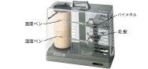

2026年
問題80 環境要素などの測定に関する次の記述のうち，最も不適当なものはどれか．
(1)温度の測定には，毛髪等の伸縮を利用する方法がある．
(2)相対湿度の測定には，電気抵抗を利用する方法がある．
(3)風速の測定には，発熱体の冷却による不平衡電流・電圧と気流との関係を利用する方法がある．
(4)熱放射の測定には，グローブ温度計 を利用する方法がある．
(5)ダクト内の風量の測定には，オリフィスを利用する方法がある．
2026年
問題80 正解（1） 頻出度AA
毛髪等の伸縮を利用するのは，湿度の測定である（2026-80-1図参照）．温度では毛髪は目立って伸縮しない．
2026-80-1 自記温湿度記録計

出典 株式会社佐藤計量器製作所
https://www.sksato.co.jp/7210-00
-(2)電気湿度計は，塩化リチウム等の吸湿性塩の電気抵抗変化を利用したもの，薄膜ポリマーフィルムの誘電体の誘電率が相対湿度で変化することを利用したもの等がある．遠隔測定，連続測定に適するが，センサー部の経年変化があるのでアスマン計などによる定期的な較正を必要とする．
-(3)熱線式風速計は，電流で加熱された熱線（白金線，タングステン線等），サーミスタ，トランジスタから気流に奪われる熱量が周囲風速に関係する原理を利用して気流速度を測定する．
熱線を一定電圧で加熱すると，風速に応じて熱線に不平衡電流が生じることを利用した定電圧式と，風速の変化による熱線の温度変化に応じて瞬時に入力電流が変化し熱線の温度を一定に保つ定温度式等がある．
製品によっては，エレメント(センサ部)の幾何学的形状によって指向特性があり，あらかじめ風向を知らないと正確な測定ができない．
-(4)グローブ温度計は問題23解説参照．
-(5)流体が流れている管路にオリフィス（穴の空いた板）などを入れて流れを絞ると，その前後に差圧が発生する（2026-80-2図参照）．
2026-80-2図 オリフィスによる差圧
この差圧は，ベルヌーイの定理により，流量\(Q\)［m3/s］と次式の関係がある． \[Q=60\alpha A\sqrt{\frac{2}{\rho}}\varDelta P\]